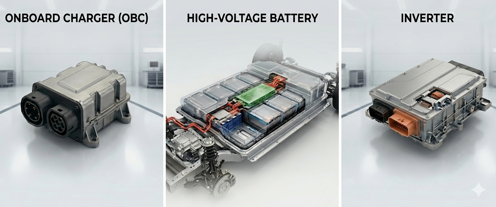
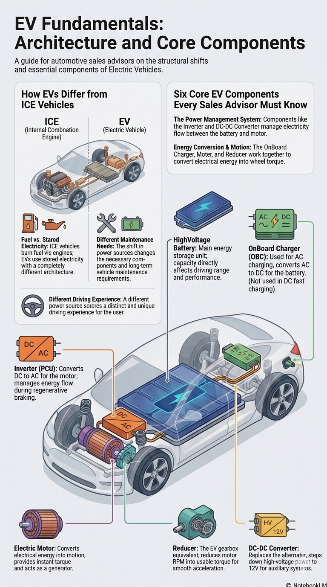

When discussing electric vehicles with customers, clarity matters far more than complexity. Module 3 focuses on the essential components that power an EV—not from an engineering standpoint, but from a practical, customerfriendly perspective. As a Sales Advisor, your role is not to explain circuitry, voltage maps, or deep technical design. Your responsibility is to understand the key components well enough to present them with confidence, accuracy, and structure. When a customer asks, “What actually powers this vehicle?”, hesitation signals uncertainty. A clear and organised explanation, however, builds authority.
Electric vehicles differ fundamentally from internal combustion engine (ICE) vehicles because they rely on an entirely different source of energy. An ICE vehicle generates power by burning fuel inside its engine. That combustion process requires a fuel tank, an engine block, a transmission system, spark plugs, exhaust piping, and several mechanical components designed to manage fuel and emissions. An electric vehicle operates on a completely different principle. Instead of burning fuel, it uses electricity stored inside a highvoltage battery to power an electric motor. Because the energy source is different, the architecture of the vehicle is different as well. A different power source leads to different components, different maintenance expectations, and ultimately, a different driving experience.
To understand EV systems clearly, there are six core components every Sales Advisor must know. These six elements form the foundational structure present across all EVs regardless of brand or model. They include the OnBoard Charger (OBC), the HighVoltage Battery, the Inverter (also called the Power Control Unit), the Electric Motor, the Reducer, and the DCDC Converter. Once you understand how these components interact, the entire EV ecosystem becomes logical rather than technical.

The OnBoard Charger is the first key component, primarily involved during AC charging. When a customer plugs the vehicle into a home wall box or an AC public charger, the electricity supplied is in Alternating Current form. The battery, however, stores energy as Direct Current. The OBC’s role is to convert AC into DC so the battery can store it. It is crucial to understand that the OBC is not used during DC fast charging, because DC chargers perform the conversion outside the vehicle. This distinction matters. If you confuse the role of the OBC, customers who are familiar with charging will immediately notice the inconsistency.
The highvoltage battery serves as the central energy storage unit of the vehicle. It functions like a fuel tank in a petrol car, except it stores electricity rather than petrol. This battery supplies energy to the electric motor and other highvoltage systems. Battery capacity directly influences driving range, performance, and efficiency. When customers ask questions about range, they are indirectly asking about battery size, energy density, and how efficiently the vehicle manages that stored energy. Understanding this relationship allows you to provide accurate, structured explanations.
The inverter is another critical component and acts as the control bridge between the battery and the motor. During driving, the battery supplies DC electricity. However, the electric motor operates using AC power. The inverter converts DC into AC, making it possible for the motor to function. During regenerative braking, the energy flow reverses. The motor generates AC electricity as it slows the vehicle down, and the inverter converts that AC power back into DC for the battery to store. In simple terms, the inverter manages the direction and conversion of energy, functioning as one of the most important “traffic controllers” in the EV system.

.
The electric motor is the heart of the propulsion system. It converts electrical energy into mechanical energy, creating the torque needed to move the vehicle. Unlike an ICE engine, which requires combustion cycles and multiple gears to produce usable power, an electric motor delivers immediate torque from the moment it begins turning. This explains the smooth, instant acceleration EV drivers experience. The same motor also performs regenerative braking when operating in reverse as a generator, converting mechanical energy back into electricity to recharge the battery. One component serving two critical roles reflects the efficiency of EV design.
The reducer functions similarly to a gearbox but in a far simpler form. Electric motors can spin extremely quickly, often thousands of revolutions per minute. The reducer lowers this high rotational speed and converts it into usable torque before sending it to the wheels. Because EVs do not require complex multigear transmissions, the overall drivetrain becomes simpler, lighter, and more seamless in operation. When customers ask why EVs feel exceptionally smooth, the reducer is part of that answer.
The final core component is the DCDC Converter. In an ICE vehicle, the alternator converts mechanical energy into electrical energy to power lowvoltage systems like lighting and infotainment. In an EV, this function is handled by the DCDC converter. It steps down highvoltage power from the main battery into lowvoltage energy—usually 12 volts—to operate standard electronics and recharge the auxiliary battery. Customers rarely ask about this directly, but understanding its role allows you to explain the entire EV system with structure and confidence.
At first glance, EV technology may appear complex. But when broken down into six key components, each with a clear and defined function, the system becomes straightforward. Energy is stored, converted, controlled, and delivered in a continuous and efficient loop. Once you understand this logic, you do not need to memorise scripted descriptions. You can explain confidently and adapt your explanation based on the customer’s level of understanding.
The question is not simply whether you can name the components. The real test is whether you can explain how they work together—clearly, confidently, and without hesitation. When you can do that, you position yourself not just as a salesperson, but as a trusted advisor within a rapidly evolving automotive market.

Apabila berbincang tentang kenderaan elektrik dengan pelanggan, kejelasan jauh lebih penting daripada penerangan yang terlalu kompleks. Modul 3 memberi fokus kepada komponen utama yang menggerakkan EV — bukan dari sudut kejuruteraan yang terlalu teknikal, tetapi dari perspektif yang praktikal dan mudah difahami pelanggan. Sebagai Sales Advisor, peranan anda bukan untuk menerangkan litar elektronik, peta voltan atau reka bentuk teknikal yang mendalam. Tanggungjawab anda ialah memahami komponen utama dengan cukup baik supaya boleh menerangkannya dengan yakin, tepat dan tersusun. Apabila pelanggan bertanya, “Apa sebenarnya yang menggerakkan kenderaan ini?”, keraguan dalam jawapan akan menunjukkan ketidakpastian. Sebaliknya, penerangan yang jelas dan teratur akan membina keyakinan dan kredibiliti.
Kenderaan elektrik berbeza secara asas daripada kenderaan enjin pembakaran dalaman (ICE) kerana ia menggunakan sumber tenaga yang berbeza sepenuhnya. Kenderaan ICE menghasilkan kuasa dengan membakar bahan api di dalam enjin. Proses pembakaran ini memerlukan tangki bahan api, blok enjin, sistem transmisi, palam pencucuh, paip ekzos dan pelbagai komponen mekanikal lain yang mengurus bahan api serta pelepasan gas. Kenderaan elektrik pula beroperasi dengan prinsip yang berbeza. Daripada membakar bahan api, ia menggunakan elektrik yang disimpan dalam bateri voltan tinggi untuk menggerakkan motor elektrik. Oleh sebab sumber tenaganya berbeza, struktur kenderaannya juga berbeza. Sumber tenaga yang berbeza membawa kepada komponen yang berbeza, jangkaan penyelenggaraan yang berbeza, dan akhirnya pengalaman pemanduan yang juga berbeza.
Untuk memahami sistem EV dengan jelas, terdapat enam komponen utama yang perlu diketahui oleh setiap Sales Advisor. Enam komponen ini membentuk asas sistem yang terdapat pada semua EV tanpa mengira jenama atau model. Komponen tersebut ialah On-Board Charger (OBC), bateri voltan tinggi, inverter (juga dikenali sebagai Power Control Unit), motor elektrik, reducer, dan DCDC converter. Apabila anda memahami bagaimana komponen ini berinteraksi antara satu sama lain, keseluruhan sistem EV akan menjadi lebih logik dan mudah difahami.

On-Board Charger ialah komponen penting pertama dan ia terlibat terutamanya semasa proses pengecasan AC. Apabila pelanggan mengecas kenderaan menggunakan wall box di rumah atau pengecas awam AC, elektrik yang dibekalkan adalah dalam bentuk Alternating Current (AC). Namun bateri kenderaan menyimpan tenaga dalam bentuk Direct Current (DC). Peranan OBC ialah menukar arus AC kepada DC supaya bateri boleh menyimpan tenaga tersebut. Penting untuk difahami bahawa OBC tidak digunakan semasa pengecasan pantas DC kerana pengecas DC melakukan proses penukaran itu di luar kenderaan. Perbezaan ini penting. Jika peranan OBC diterangkan dengan salah, pelanggan yang biasa dengan sistem pengecasan akan mudah menyedari ketidaktepatan tersebut.
Bateri voltan tinggi berfungsi sebagai unit penyimpanan tenaga utama dalam kenderaan. Ia boleh dianggap seperti tangki bahan api dalam kereta petrol, tetapi ia menyimpan elektrik dan bukannya petrol. Bateri ini membekalkan tenaga kepada motor elektrik dan sistem voltan tinggi yang lain. Kapasiti bateri memberi kesan secara langsung kepada jarak pemanduan, prestasi dan kecekapan kenderaan. Apabila pelanggan bertanya tentang jarak pemanduan, secara tidak langsung mereka sebenarnya bertanya tentang saiz bateri, ketumpatan tenaga, dan sejauh mana kenderaan menggunakan tenaga yang disimpan dengan cekap. Memahami hubungan ini membantu anda memberi penerangan yang lebih jelas dan tersusun.
Inverter ialah satu lagi komponen penting yang bertindak sebagai penghubung kawalan antara bateri dan motor. Semasa memandu, bateri membekalkan elektrik dalam bentuk DC. Namun motor elektrik beroperasi menggunakan arus AC. Inverter menukar tenaga DC kepada AC supaya motor boleh berfungsi. Semasa brek regeneratif pula, aliran tenaga akan berbalik arah. Motor akan menghasilkan tenaga elektrik dalam bentuk AC ketika memperlahankan kenderaan, dan inverter akan menukarkannya semula kepada DC untuk disimpan dalam bateri. Secara ringkasnya, inverter mengurus arah aliran dan penukaran tenaga, menjadikannya salah satu “pengawal trafik tenaga” yang paling penting dalam sistem EV.
Motor elektrik merupakan komponen utama dalam sistem pergerakan kenderaan. Ia menukarkan tenaga elektrik kepada tenaga mekanikal untuk menghasilkan tork yang menggerakkan kenderaan. Berbeza dengan enjin ICE yang memerlukan kitaran pembakaran dan beberapa gear untuk menghasilkan kuasa yang boleh digunakan, motor elektrik memberikan tork serta-merta sebaik sahaja ia mula berputar. Inilah sebabnya pemanduan EV terasa lebih lancar dan pecutannya lebih responsif. Motor yang sama juga menjalankan fungsi brek regeneratif apabila bertindak sebagai generator, menukarkan tenaga mekanikal kembali kepada elektrik untuk mengecas semula bateri. Satu komponen yang menjalankan dua fungsi penting menunjukkan kecekapan reka bentuk EV.
Reducer berfungsi hampir seperti gearbox, tetapi dalam bentuk yang jauh lebih ringkas. Motor elektrik boleh berputar dengan sangat laju, selalunya mencecah ribuan pusingan seminit. Reducer menurunkan kelajuan putaran yang tinggi ini dan menukarkannya kepada tork yang sesuai sebelum dihantar ke roda. Oleh kerana EV tidak memerlukan transmisi berbilang gear yang kompleks, keseluruhan sistem pemanduan menjadi lebih ringkas, lebih ringan dan lebih lancar ketika digunakan. Apabila pelanggan bertanya mengapa pemanduan EV terasa sangat smooth, reducer adalah sebahagian daripada jawapannya.
Komponen utama terakhir ialah DCDC Converter. Dalam kenderaan ICE, alternator menukarkan tenaga mekanikal kepada tenaga elektrik untuk membekalkan kuasa kepada sistem voltan rendah seperti lampu dan infotainment. Dalam EV, fungsi ini dilakukan oleh DCDC converter. Ia menurunkan voltan tinggi daripada bateri utama kepada voltan rendah — biasanya sekitar 12 volt — untuk menggerakkan sistem elektronik biasa serta mengecas bateri tambahan. Walaupun pelanggan jarang bertanya tentang komponen ini secara langsung, memahaminya membantu anda menerangkan keseluruhan sistem EV dengan lebih jelas dan yakin.
Pada pandangan pertama, teknologi EV mungkin kelihatan kompleks. Tetapi apabila ia dipecahkan kepada enam komponen utama yang masing-masing mempunyai fungsi yang jelas, keseluruhan sistem menjadi lebih mudah difahami. Tenaga disimpan, ditukar, dikawal dan dihantar dalam satu kitaran yang berterusan dan cekap. Apabila anda memahami logik ini, anda tidak perlu menghafal skrip penerangan. Anda boleh menerangkannya dengan yakin dan menyesuaikan penerangan mengikut tahap pemahaman pelanggan.
Persoalannya bukan sekadar sama ada anda boleh menyenaraikan komponen tersebut. Ujian sebenar ialah sama ada anda boleh menerangkan bagaimana semuanya bekerjasama — dengan jelas, yakin dan tanpa ragu-ragu. Apabila anda mampu melakukannya, anda bukan sekadar bertindak sebagai jurujual, tetapi sebagai penasihat yang dipercayai dalam pasaran automotif yang sedang berkembang pesat ke arah elektrifikasi.